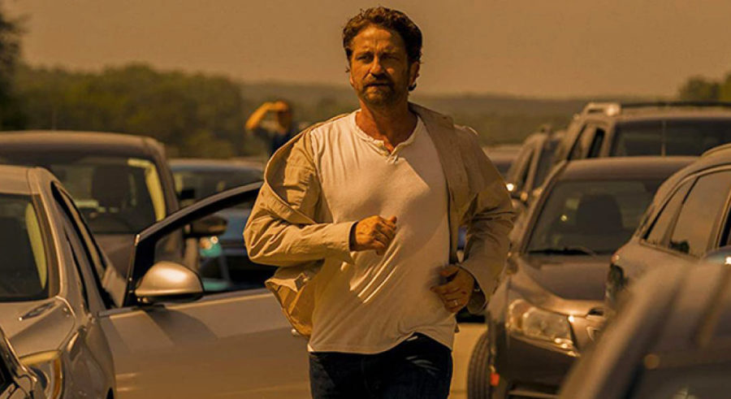

Ambientada en el universo de Spider Man, se centra en uno de sus
villanos más icónicos, Morbius,
un doctor que tras sufrir una enfermedad en la sangre y fallar al intentar curarse,
se convirtió en un vampiro. Fecha de estreno: 1 de abril de 2022 (Estados Unidos) Director: Daniel Espinosa Recaudación:163.7 millones USD Presupuesto: $75–83 millones Protagonistas: Jared Leto; Matt Smith; Adria Arjona; Jared Harris; Al Madrigal; Tyrese Gibson Productora:Columbia Pictures; Marvel Entertainment; Arad Productions; Matt Tolmach Productions
Red Notice
John Hartley, agente de la Interpol, no tendrá otro remedio que aliarse con el ladrón
de arte más célebre de todos los tiempos, Nolan Booth, para capturar a la ladrona de arte más
buscada del presente: la seductora y peligrosa Sarah Black. Fecha de estreno:4 de noviembre de 2021 Director:Rawson Marshall Thurber Presupuesto:200 millones USD Música compuesta por:Steve Jablonsky Guion:Rawson Marshall Thurber Productores: Dwayne Johnson, Rawson Marshall Thurber, Dany García, Hiram García, Beau Flynn.
Uncharted
Uncharted es una película estadounidense de aventura,
fantasía, comedia y acción dirigida por Ruben Fleischer y basada en la serie
de videojuegos Uncharted, creada por Amy Hennig para Naughty Dog. Su guion, escrito
por Art Marcum y Matt Holloway, narra los orígenes de los cazarrecompensas Nathan Drake
y Victor Sullivan, y sirve como una precuela de los videojuegos. La película es protagonizada
por Tom Holland, Mark Wahlberg, Sophia Ali, Tati Gabrielle y Antonio Banderas. Fue lanzada el
11 de febrero de 2022 bajo la distribución de Sony Pictures Releasing.
The Adam Project
Adam Reed, un viajero del tiempo y piloto de combate, aterriza en el año
2022. Allí, se encuentra con su yo de doce años y, junto a él, tratará de salvar el futuro.
Fecha de estreno:9 de marzo de 2022 (Estados Unidos). Director:Shawn Levy Música compuesta por:Rob Simonsen Productores:Ryan Reynolds, Shawn Levy, Dana Goldberg, Don Granger, David Ellison Productores ejecutivos:Jennifer Flackett, Mark Levin, Dan Cohen, MÁS Guion:Jonathan Tropper, Jennifer Flackett, T.S. Nowlin, Mark Levin
Spider-Man: No Way Home
Tras descubrirse la identidad secreta de Peter Parker como Spider-Man,
la vida del joven se vuelve una locura. Peter decide pedirle ayuda al Doctor Extraño para
recuperar su vida. Pero algo sale mal y provoca una fractura en el multiverso. Fecha de estreno:17 de diciembre de 2021 (Estados Unidos) Director:Jon Watts Recaudación:1.89 miles de millones USD Presupuesto:200 millones USD Premios:Nickelodeon Kids' Choice Award al Actor de Película Favorito, MÁS Guion:Chris McKenna, Erik
Occupation: Rainfall
Dos años después de haber sufrido una invasión intergaláctica en la Tierra, los
supervivientes de Sydney luchan en un campo de batalla desesperado. Mientras los
cadáveres se acumulan, la resistencia teje un plan que podría acabar con la guerra. Fecha de estreno:28 de enero de 2021 ( Australia ) Director:Luke Sparke Presupuesto:25 millones AUD Guion:Luke Sparke
The Tomorrow War
Un grupo de viajeros en el tiempo se transporta desde el año 2051 para entregar
un mensaje urgente: la humanidad está perdiendo la guerra mundial contra unos alienígenas.
La única esperanza es que los ciudadanos del presente se unan a la lucha. Fecha de estreno inicial:2 de julio de 2021 Director:Christopher McKay Presupuesto:200 millones USD Recaudación: 19.2 millones USD Guion: Zach Dean Productores:Skydance Productions, Paramount Pictures Studios, MÁS
Moonfall
Una fuerza misteriosa golpea a la Luna fuera de su órbita y la envía en choque
directo contra la Tierra a toda velocidad. Unas semanas antes del impacto con el
mundo al borde de la aniquilación, la ejecutiva de la NASA y ex astronauta Jo Fowler
está convencida de tener la clave para salvar nuestro planeta. Fecha de estreno :3 de febrero de 2022 (Alemania) Recaudación:58.9 millones USD Director:Roland Emmerich Guion: Roland Emmerich, Harald Kloser, Spenser Cohen Productores:Roland Emmerich, Harald Kloser, John A. Amicarella
El día del fin del mundo

Una familia emprende un viaje para encontrar un refugio seguro cuando un gran cometa
arremete contra la Tierra. A medida que el apocalipsis se acerca, la increíble travesía
termina en una batalla de último minuto para llegar a puerto seguro. echa de estreno inicial:F 29 de julio de 2020 Director: Ric Roman Waugh Recaudación: 52.3 millones USD Presupuesto: 35 millones USD Guion: Chris Sparling Productores: Gerard Butler, Basil Iwanyk, Alan Siegel, Sébastien Raybaud